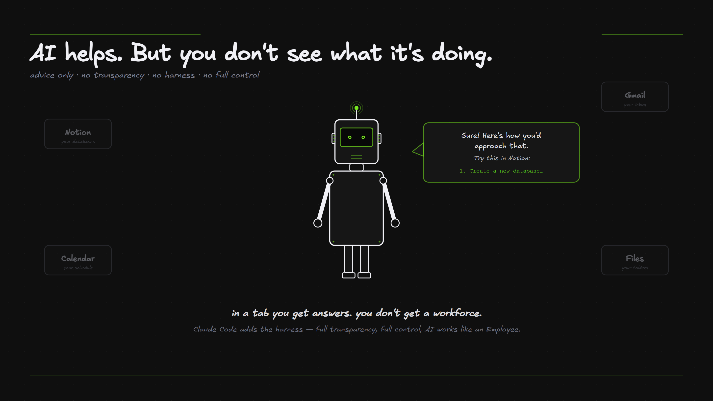
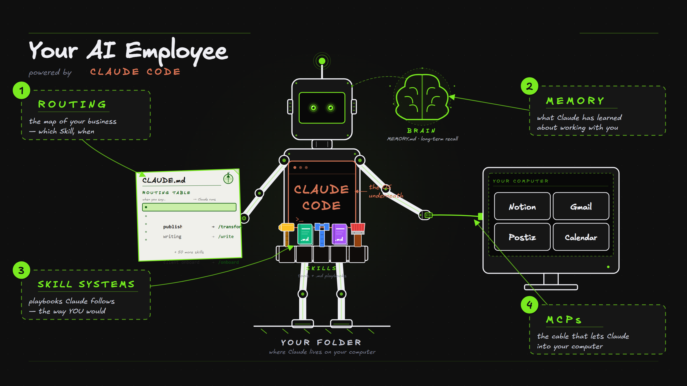
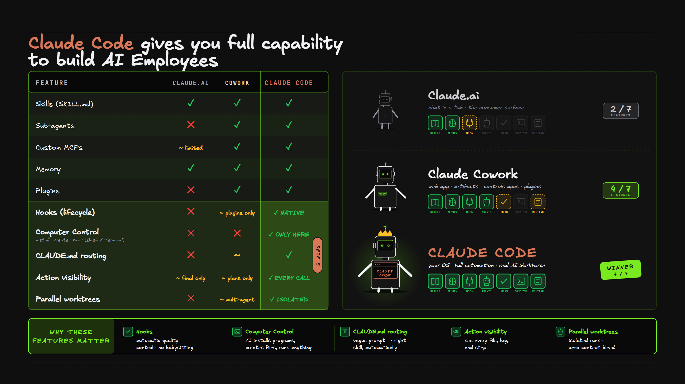
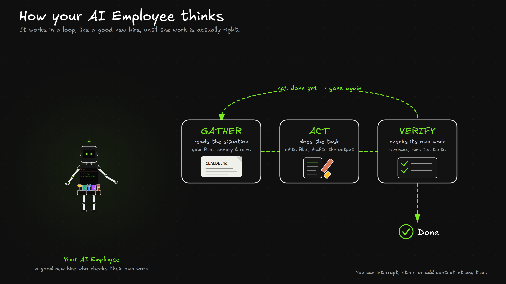

What Claude Code actually is
Most people meet AI in a chat box. It answers, you copy the answer out, and it forgets you by tomorrow. Claude Code is a different thing. It's an AI Employee you build that works inside your business and does the job, not just talks about it. This module is the "what" and the "why" before any of the how.
Watch first: what Claude Code is
A plain-English tour of the whole thing. The rest of this course breaks each part down.
💬 The problem with a chat box
A chatbot in a tab is helpful, but it's stuck behind glass. It can't open your files, it doesn't remember your business between chats, and everything it makes you have to copy out and paste somewhere yourself. You get answers, not work that's actually done.

That gap is the whole reason Claude Code exists. It takes the same intelligence out of the tab and puts it to work where your work already lives.
🤖 You employ it, you don't chat with it
What it is. An AI Employee reads and edits your real files, remembers your business in a plain text file, works through multi-step jobs on its own, and runs your exact process instead of generic advice.
💬 A chatbot
- Can't see your files
- Forgets you between chats
- Hands you text to copy-paste
- Does one turn at a time
🤖 Your AI Employee
- Reads and edits your actual files
- Remembers your business (CLAUDE.md)
- Does the job, in your tools
- Works through multi-step tasks on its own
Why it matters. Everything in this course is just the parts that make that possible. Five of them do most of the work, and you'll meet each one in its own module.
| Building block | What it gives your employee |
|---|---|
| 🧠 Memory (CLAUDE.md) | It knows your business, your voice, your rules |
| 🛠️ Skills | Jobs it runs the same way every time |
| 🤖 Sub-agents | Helpers it sends off to work on their own |
| 📡 Connections (MCP) | It reaches your other tools (Notion, Gmail…) |
| ⚡ Hooks | Automatic reactions that keep it reliable |

🏆 Why Claude Code, not just Claude.ai
What it is. Claude shows up in a few places. The chat app (Claude.ai) is great for thinking out loud. Cowork hands a task off and waits. Claude Code is the one that becomes a real workforce, because it's the only one with all the parts: skills, sub-agents, your own connections, memory, and the automatic checks.

The point isn't the scoreboard. It's that the building blocks only stack up into an employee in one of these, and that's where we work.
🪟 Where it lives, and why we use VS Code
What it is. It's one engine that runs in several places, the terminal, the desktop app, the web, JetBrains, Slack, and VS Code. They all share the same memory, settings, and connections. We teach it in VS Code for one reason.
Why VS Code. You see everything it does. Every file it reads, every edit it makes, every command it runs shows up in front of you, and you approve or steer in real time. A chatbot is a black box. Claude Code in VS Code is a glass box you can see into.

🔁 How it thinks
What it is. Claude Code isn't autocomplete. It works in a loop, like a good new hire. It reads the situation, does the task, checks its own work, and goes again if it's not right yet, until the job is actually done.

And you're never locked out. You can interrupt, steer, or add context at any point, the same way you'd lean over and redirect a teammate mid-task.
Go deeper: new to the terminal or Git? (optional)
You don't need either to start, Claude runs the commands for you and shows you each one first. But here's what they are in plain English, so nothing feels like a black box.
The terminal is just texting your computer
Instead of clicking around, you type a short instruction and your computer does it. You'll really only ever see a handful, and Claude types them for you.
- claude — start Claude Code
- git pull — get the latest updates
- git add . then git commit -m "…" — save a snapshot of your work
- git push — upload it to the cloud
GitHub is Google Drive for your AI Employee
It's where your workspace is stored and versioned, except you control when it syncs. Git gives you save points, like checkpoints in a game, so you can always go back to any version. When we ship an update, your skills and CLAUDE.md get the new version on git pull, and the folders that hold your work (your clients, your content) are never touched.